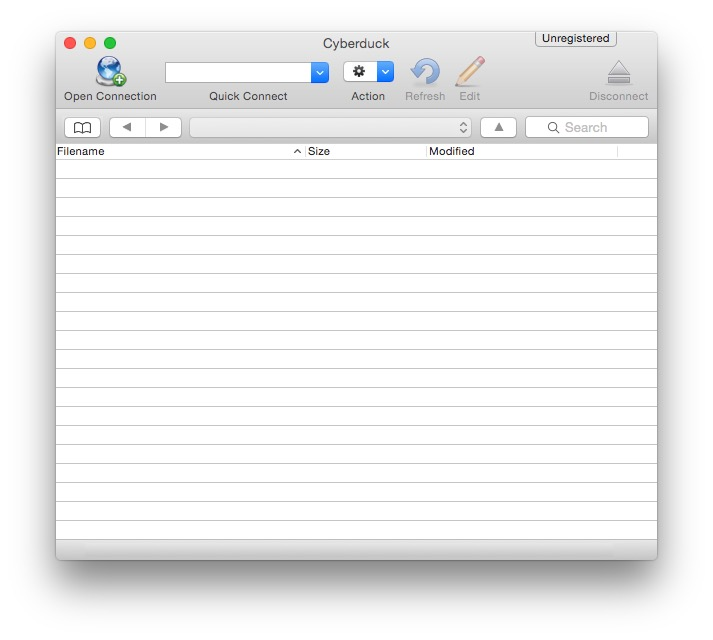

So, you wanna build a website?
Step 1. Connect to the Mason server
This is probably the hardest part of tonight. If you can get past this, the rest of this will be a breeze!
When you visit a website, your browser downloads a special file called an "HTML" file and displays it. In this class, we will be creating these files and transfering them to the Mason server. Once you do this, you will be able to visit http://mason.gmu.edu/~netid/ and see your webpage!
So we need to start by learning how to transfer files to the Mason server.
Step 1a. Microsoft Windows
If you're using Microsoft Windows, you will need to download a program to transfer files to the Mason server. We suggest that you download and install Cyberduck.
Step 1b. Apple Macintosh OS X
If you're using Apple Macintosh OS X, you will need to download a program to transfer files to the Mason server. We suggest that you download and install Cyberduck. (NOTE: We know that OS X comes with the scp program for transfering files via the Terminal.)
Once you've installed Cyberduck, open Cyberduck.
Click Open Connection, and make sure SFTP (SSH File Transfer Protocol) is selected from the dropdown. In the box for Server, enter mason.gmu.edu and make sure the Port is 22. In the box labeled Username, enter your NetID. Enter your GMU Password in the box labeled Password. If you've forgotten your password, you can reset your Patriot Pass password. Once you've verified that your information is correct, click Connect.
Step 1c. Linux
If you're using Linux, you probably have everything you need already!
Open Files, and click File > Connect to Server.
In the Server Address box, type sftp://netid@mason.gmu.edu/home/netid and click Connect. Remember to replace netid with your NetID (e.g., ksarkhel is my NetID).
Step 1.5. Setting up your home directory
Now that you're logged into your account on the Mason cluster, we need to ensure that your home directory is set up properly to host a web page.
In order to serve HTML files to your public webpage, Mason
relies on the existence of a directory named 'public_html' inside
your home directory. To create this directory, right click in the
Cyberduck window and select New Folder, then type
public_html.
Within this directory you will place all the HTML files that you want people to be able to see, including the ones we make during this class. Let's go ahead and make a test homepage.
Open a basic text editor and create a new file (notepad
on Windows, TextEdit on Mac, or gedit on Linux).
In this file, type whatever you want - keep it short for now, such
as your name, or a sentence. Then save the file with the name
index.html.
On Windows, you must select File >
Save As... and select
All Files (*) from the drop-down list at the
bottom of the dialog box, then enter index.html as
the file name.
On Mac using TextEdit, make sure File Format is
set to Web Page (.html) and enter
index in the Save As: field.
Failure to follow those steps may result in a file with a name
like index.html.txt, which will not work.
Now we're going to upload the file you made to your home
directory on Mason, inside the public_html directory
we made earlier. To do that, simply drag the file from wherever you
saved it on your local computer to inside your SFTP window,
ensuring it lands inside the public_html folder.
Now let's open your internet browser and go to your Mason
webpage. The URL is mason.gmu.edu/~netid (where
netid is your GMU username - the same one you logged
in with earlier).
If you are setting up web access for the first time, you may get an error page 403 Forbidden:
If this is the case, it is because the public_html
directory you created had its permissions set by default to
disallow others from viewing the files inside. To fix this in
Cyberduck, right-click on the public_html folder and
click Info. Then click the
Permissions tab at the top of the window. Your
permissions should be set to Read, Write and
Execute for Owner, and
Execute for Group and
Others. The Execute permission flag
enables other people to list the files in your
public_html directory. You do NOT want Write
permissions for Group or Other;
otherwise, anyone would be able to modify your files!
To verify you have the correct permissions, check that the
Unix Permissions box reads 711 or
755.
Once you have the correct permissions, refresh the
page in your internet browser and you should see the sentence you
typed earlier into your index.html file.
Congratulations! You are now ready to make your own website on the
Mason cluster!
Step 2. Basic HTML
Basic Structure of an HTML File
HTML Tags
Paragraphs
Breaking up your Content using Header Tags
Linking to Other Files
Lists

Lists are a useful way to organize information. For example, you could put a list of classes you've taken or a shopping list on your webpage. You can either have an unordered list (just bullet points) or an ordered list (where each item is enumerated 1, 2, 3,… and so on). We'll start with unordered lists.
Start by adding the following code to your HTML file.
<ul> <li>Milk</li> <li>Bred</li> <li>Egs</li> <li>A Dog</li> </ul>
The text between the <li> and </li> tags are called the list item tags. The <ul> starts an unordered list in which you can put list item tags. When you reload your browser, you should see the following:
- Milk
- Bred
- Egs
- A Dog
Try adding another list item that says Hello, List!.
Once you've done that, change the <ul> and </ul> to <ol> and </ol< respectively. Once you've done that it should look like this when you reload the browser.
- Milk
- Bred
- Egs
- A Dog
- Hello, List!
If your browser doesn't look like this, make sure your code looks like the following:
<ul> <li>Milk</li> <li>Bred</li> <li>Egs</li> <li>A Dog</li> <li>Hello, List!</li> </ul>